# **第二部分 - 第一节** ## **24.11.4 ~ 11.17** **这里仍然是对灵感的记录** **张行问：“你的文化真的跟得上吗？”，我没说话，心里想到“我也不知道啊！？”** <span style="color: red;">2024.11.5</span> 上午专业课下课时，曾长春让周易楠把我叫到办公室，给我们展示我们一直梦寐以求的东西，比赛的报名界面。 漫漫长路，曙光，失望，遗憾，斗争。 --- ## **向后转，继续干！** 说真的我不想去实习，我不想在流水线前浪费五个月的时间，我更不想将时间浪费在这荒诞的规则上。可我有什么办法呢？对于大多数人而言，他们确实做到了“活在当下”，他们吃着时代的红利、追着利益的潮流、看着日新月异的发展，他们却没有一点危机意识一直躺在舒服的温床中，看着斑斓的电子屏幕去评价眼前一闪而过的生活是非，都是人们干的，每个人都是时代的罪人。女人笑着，男人看着。不是说他们混吃等死，他们就是这样，一次失败以及一次失去就夺走了他们反抗命运的能力，他们就这样看着被失去、被遗弃，每个人生而不同出身也不同，对身边的一切的体验也不同，不能强求他们去理解一切，他们缺少的不是机会而是反抗意志，反抗这不尽人意的生活，用双手去创造自己想要的一切。 --- ## **24.11.18 ~ 24.11.30** <span style="color:red; font-weight: bold">2024年11月18日晚上 事件记录</span><br> | 项目名称 | 参赛选手 | 比赛时间 | |---|---|---| | 网络建设与运维 | 周逸轩、张行 | 待定（一月）| | 移动应用开发 | 周易楠、贺仁涛 | 待定 | --- 今天考试，本来是11号却改成今天，早上下雨，现在已经停了。不知道是什么时候，我喜欢在考试时去思考那些无穷无尽的问题，然后再把它忘掉，直到另一天从我的心里苏醒。中考只有一次，人生也是。我来双福后只有一次考试是让我找回原来的感觉的，那种盘旋在手上、信手拈来的自信感，那是最后一次感受这王者般的感觉，仿佛曾经的我就坐在这里，但那时已经晚了，那只是回光返照。 在双福的一年十个月就好像是西西弗斯重返人间去享受、触摸以及欣赏最后的流水与阳光，然后回到那个注定的地方，这里就是地狱。 一年十个月的人间假期，这是我对我刚认识的那位同学的第一个回答，问题我已经不记得了，只记得几个月前的回忆在我的脑海中横冲直撞，当我真正看到他的脸时我是非常失望的，一个人的正脸从眼前一闪而过，那是我回不去的记忆。 ### **2020年 4/5月** 母亲来接我回去，因为离学校近。下午的事情正扰乱我的大脑，断断续续的片段闯进视眼前的视野中，我的面前是一堵白墙后面就是医务室，里面传来细微的谈论声。我头晕，是为什么呢？ 我的抱怨声还是传进了他们的耳朵里，我在下午第一节课上被班主任叫到了办公室，里面很大有很多作业、课本以及一些毫无反应的脑袋，班主任的办公室我很少来，尽管就在我们教室的这一层。外面刚下完雨天还是黑的，天花板上的白炽灯散出昏昏沉沉的灯光，好像这里是另一个世界，我记得一年以前我的小学教室好像也是这种灯泡，“说吧”她的突然提问把我从回忆中拉了回来，我不知所措，我根本就不知道她在问些什么，大概是中午的事情？我不知道，但我认为我没有做错班里的其他人也同样如此，但我不知道我们当中有个叛徒。 我没有回答她，只是沉默。死寂的声音在我的脑海中回荡，我被击倒了，只记得我躺在地上，我看向她，她也不知所措她的脸突然溢出后悔的表情，我所学过的知识像乌鸦一样从脑海飞出身外只留下课堂上我与老师的身影，办公室其他老师像是从水泥地里钻出来一样围在我们两人身边，我被一个男英语老师扶到了外面，是隔壁班的老师，我只记得他不停地向我解释、安慰我，我没有反应，把我送到医务室外面的椅子上是时排山倒海的眩晕感向我袭来还伴着远处刺耳的座椅声，我的“支持者”们纷纷从教室里面出来围在我身边，然后就被医务室里面的英语老师喝退了，同学们似乎很好奇但我也管不上那些了。我就是那样僵硬地坐在那里。 > There she stood in the doorway<br> > I heard the mission bell<br> > And I was thinking to myself<br> > This could be Heaven or this could be Hell 当我再次被扶起时旁边多了一个人，是急忙赶来的母亲，我的身体早就僵硬了 --- 我用*西西弗斯*这个希腊神话人物来描述关于我所经历的事物，这样的描述虽然符合荒诞哲学 月上吴刚。 船抵马赛日，命运注定时。 我应该写点“黑色幽默”的东西？ Good morning, and in case I don't see you, good afternoon, good evening, and good night. 跟你说了你就是个混蛋，妈的 我疯了。。。 --- ### **我与张行的邮件** > 时间：2024年11月28日（星期四）下午8 : 12 > > 接着早上的继续说.。 > > 我们班那个叫“贺仁涛”的人他是“楠”的小伙伴，昨天晚上九点半收手机的时候跟我们班另一个也很讨厌的人打起来了，具体原因不明， > 但大概猜得到为什么无非就是不服那个管手机的人，然后打起来了。 > > 刚开始我在床上看我们寝室其他人打牌然后听到外面突然吵起来了，我就知道肯定有寝室爆发矛盾了， > 果不其然是我们班的人，刚开始我在听外面的声音，宿管跑去制止他们，我就在床上听动静，听声音我以为是我们寝室另一个叫“黄星宇”的也参加比赛的人， > 因为他的性格确实会跟那个人打架，但不是他。 > > 今天早上我才知道是”贺仁涛“，代把他叫出去，然后就听到代的“狮子吼”了，贺找了不少理由其中就包括技能大赛，哈哈，自己把自己玩死了。 > 最后结果就是代“取消了比赛资格”不让他参加比赛，但我认为这只是短期的（直至正式培训前的时间，有可能代会回心转意又让他回去了，毕竟楠那里只有一个人而且还是刘部长的项目）， > 上午第二节课我看见班长拿着一张“白色的奖状”给了贺，是处分。 > > 但是，他们还是想“鱼死网破”，中午、下午以及第一个晚自习都在实训室而且我听他们好像要给某人道歉还是怎样，反正肯定要挣扎一下（估计后劲不小），既然这样那就给他一个痛快， > 明天我继续观望他们的事情下午正好有代的课，看他们会怎么办，也有可能在今晚就把他们之间的事情给解决了（我不是很担心，反正处分都到手了）。 > > 按照刘的说法下周应该就有好消息了，胜利就在眼前！ --- 我的期中成绩已经出来了，比去年还差，这里的差是成绩真的下降了。虽然他们的分数都是用手机搜题搜出来的，可分数毕竟摆在那里。 我感觉我已经无力回天了，天空就在头顶可我却碰不到。 我疯了。。。 你们也期中考试了吧，我也不敢问你考的怎么样，从三年前我刚遇到你时我就不敢问了，我都不敢问我自己。（没写完 12.14） 原谅我 我想象中的红花只是两片交错的红叶。 我想象中的红花只是两片被绿叶簇拥的红叶。簇拥？人群、团结？ 我凑进他的耳边正义且小声地说道：“The dark side of the moon”，没有别的原因只是因为月亮本身并不会发光。 --- ## **24.12.1 ~ 25.12.31** <span style="color: red; font-size: bold">2024.12.3</span> 中午曾让我把一寸照片、身份证的正反面照片发给他，没错，是报名所需要的东西。由于我的一寸照片在教室里所以我只能跑回教室去拿，来来回回跑了三次，照片在保险柜里我没有钥匙，我只能委托他们当那个保管钥匙的人回来时让他开一下保险柜，然后我就可以把照片拿走完成比赛报名， --- 张行与我的邮件 > 主题：学习 > > 收件人：周逸轩 <1805559573@qq.com> > > 时间：2024年12月7日（星期六）下午5 : 31 > > 我想好了，我要考研，这很难我知道，所以我需要你来监督我，刘思睿和张蓥他们俩你不用很在意，就当他们是一次偶遇，一次合作的伙伴。比赛完后我不会和他们俩有很大的交集（或许会和他们孤立），说真的我感觉emo了也挺好，可以安安静静的做自己的事。 > 我的回复 > 有没有可能我就再等你这句话？ *注释：再 应为 在* --- 不好意思最近没什么时间写它，简洁点吧。 从上周星期三（12.4）左右我就离开教室到实训室学习了，同时我们的实训室也换位置了（由7010迁至7001），在最后面你会看到照片。 然后关于比赛人选也在上周定好了，加上我总共四个人。新来的分别叫“刘思睿”与“张蓥”，他们两个是张行班里的骨干，他们的地位就像是“西方不能没有耶路撒冷”一样，两个人是班里前三名（加上张行），曾长春选人就是选几个成绩好的来凑数（笑）。 我讲讲现在的比赛是个什么样子吧。在上学期期末（六月底）我和周易楠去找刘东霖，然后刘说让我们暑假等消息，可这一等又是三个月，反正到了开学一个星期后我们才在他那里知道比赛已经改革， --- **喝百威啤酒，打亲朋好友**。这简直是我开学以来听过最好笑的短句，真的绷不住，我也不知道为什么，可能是很久没有人跟我讲过笑话了吧。这里要感谢张行班上的同学送来的笑话。 今天升旗仪式站了一个多小时，只是因为一些鸡毛蒜皮的事情。这里留个空后面专门谈谈这些东西，主题就叫“体制化”，待定。叫“体制化”的原因跟心血来潮的不满也有联系，形式主义是中国的病根。 我望向远处的银杏树看着地上的落叶，突然有一种想走在乡间小路上的冲动。 > > 月么 > ———— 2025届学生前技能大赛选手，周泳成的评论，来自内部平台 > > 怎么会碰到这些pi事情哦 > ———— 10.27 凌晨于寝室内周易楠的自言自语 > > 要不要让我翻译翻译他们在说什么？ > ———— 10.27 凌晨在周易楠旁边的周逸轩所说 > --- 现在是24年12月23日9：35 星期一，离放假还有18天左右，又到年底了，我还记得两年前的这几天，我们刚结束线上教学返校，我当时应该知道自己的幸福时光已经不多了，在刚开始线上教学时，我还依稀记得我一个人抱着比自己书包还要重的书本出校的场景，居民楼顶温和的红色灯光以及门口拥挤的汽车与人群已经刻在了我的脑海。你觉得我会忘掉曾经的一切吗？我无法释怀，这里的释怀不是现在网上的那些“流行用语”的意思，我讨厌那些东西，我对那里的态度亦或是感情是复杂的。。。 --- **24.12.24 上午** 我用用断断续续的事情来描述当前情况的混乱（实际上是懒得写），我觉得文体效果会好一些。体现出那种混乱？不要笑，我没有受过普通高中教育。 写它的初衷本来就是消磨时间，但看开头你就知道我从下笔的时候就已经不再是消磨时间了。对了，我认为这里面（所有）有很多病句，我不知道该怎么改，大部分都是为了记录当下情况，我可能主要负责将灵感记录下来然后等待未来的某一天再由未来的我去修改吧？ 怎么有种后现代主义文学的味道？ 好了，博君一笑，从九月中旬写到今天已经有三个月左右了，时间的流逝时快时慢，一转眼马上就要放假了而这学期结束你们就还有一年的时间就要高考了，真替你们紧张，但用冷漠一点的话讲你们考到好大学跟我又有什么关系呢？我们已经毕业怎么久了你们在新的学校遇到了新的同学、老师还有新朋友，你们遇到的人我相信他们会比我强一万倍，我又算什么呢，对于初中三年，不，是两年我来到你们身边也仅仅一年十个月，我改变了你们什么呢？好像什么也没有。我在你们的眼里不过是一个差生罢了，你们不会在我的眼前嘲讽我就已经感谢你们了，比以前强好多倍。回想起我刚来到双幅的第一天，我站在门外的心情居然跟毕业的那天一模一样！只是结束那天的心情更加平静，我相信经历过大风大浪的人都会喜欢平静的感觉，谢谢你们。 我不是很清楚你们对我是什么感觉，虽然过去的经验已经提醒过我，但我还是单纯一次，仅仅是对你们两个人而言。现在我有一种感觉，这感觉就像是你在看“鬼畜”但这个视频却讲起了真情，这是不是非常让人哭笑不得？哈哈，我写的东西你们现在也看不到（现在是9：20），你们在干吗呢？ 刚刚曾长春给我发了准考证，我看到上面的我哈哈大笑，那照片上的我正是开学第一天的周逸轩。哈哈哈，你也有愁眉苦脸的今天（照片在下面）。 （9：57），刚刚做了点题一下子半个小时就过去了，说说今天下午准备干什么，目前有两个选择：一个是学数学，之前张行说我的数学需要“恶补”，我赞同他的观点；其次就是继续作我关于比赛的东西（Docker），目前还没有想好。我对比赛的态度也是非常平静的，我认为这次比赛我们的团队拿不了很好的名次，这不是悲观的思考而是现实对生活的映射，这次比赛改革就已经注定从前的依靠实力说话拿奖的时代已经不复返了，我做的再好也得向评委献媚。都是为了生活，没办法，我们如果能拿国家一等奖就可以免试保送 —— 专科院校，没错是这样的，国家二等奖专业分440、国家三等奖专业分430、重庆市一等奖420分，那剩下的呢？可以拿两百块钱，我们上一届就是这样。他们也是可惜。 目前我也不知道比赛时间是什么时候，但我知道*周易楠*他们下周五就要去永川参加他们的比赛（25.1.3）,他之前一直在说不公平这下好了给了他机会，就看他运气好不好了。 总而言之，这个比赛就是这样诱人。当然了，你不用担心我们考不上大学，他们会来接收我们的只不过你需要准备一些长方形的纸条，本科是什么？我只知道专升本然后考研，就这些。 快考试了（12：14，刚吃完饭没多久），下午再说。 **24.12.24 下午** 好了，你眼前的文字是我在14：57的时候写的，上面两行还是两个小时以前的东西，我考完了。 这题一点都不难，总共85道题，我估计我能考一百四十多分，这个考试它的满分是一百七十分，我大概是及格了。过几天就知道成绩了。 还记得 **[Emacs 是生活，Vim 是工作](../part1/1.html)** 吗？我考完以后就把它在电脑上下载下来了，最后我的决定也很简单，**好好把 VIM 掌握**才是真理（emacs 的游戏很有意思）。虽然都说它是“神之编辑器”但我还是愿意把“编辑器之神”学明白，我没有必要为了好奇心而去将时间花费在学习新的东西上，巩固才是最重要的。 聊聊我跟张行吧。 他给我的第一印象就是沉默、有点不解人意，由于我们是坐在一张桌子上的所以一点风吹草动都感觉得到，而他有一个习惯那就是抖腿，而他一抖就会让我们的桌子晃动，我们都提醒过他，他大概是觉得好玩所以就没有特别理会我们的 ### **我与张行的邮件** > > **主题：我还是决定学数学** > > **时间：2024年12月24日（星期二）晚上21：05** > > **收件人：张行** > > 说真的，如果现在我去做 docker & k8s 的东西的话，那等到培训的时候我就没什么事情做了， > 你看 “ 楠” 他们的项目，无非就是 “找资料、编码、写演讲稿” 我要是把这些都做了，那到时候 > 我对比赛就没有什么热情，已经因为我把我认为该做的东西都做完了所以丧失“内驱力”。 > 而且，有一件事情是我们都心照不宣的，尤其是你，“楠” 他们在那时都放假了 > （就算能去参加国赛，也不会那么拼；他们现在正在 ”上号“），我的话无所谓但我也不能把我的底细 > 透给他们，做人总是要留点余地。 > > 我认为我已经把 “找资料” 这步做完了，也找到了我们会碰到的问题（我给他们两个发了文档），我的 > 前置工作已经完成了，接下来只需要去等 春春 就可以了。 > > 晚自习他在吗？ > 我突然想到一段*骚话*："我这个人一个是嘴硬，一个是下面硬"，太恶心了宝ber～（PJJ 音） **24.12.25** (9:09) 刚刚看了下关于*后现代主义文学*东西。 (14:54) 啊，上午在做 *docker* 的东西。我要把它写成文档然后发给另外两个人，之前我用的是 **HTML** 编写（就是你现在所看见的）上午我误打误撞整了个用于编写 **ePub** 电子书的软件，于是我就用上了。用了一上午我只能说还行，他这个软件就是将网页整合为epub文件，上手难度不高同时支持的东西也不多，它不能支持（或者是我的格式不对）我的 **marked** ，这很恼火，这使得我只能用最传统的方式去编辑电子书。 明天再讲。 ♿ ♿ ♿ ♿ ♿ ``` \u5927\u5bb6\u597d\u554a\uff0c\u4eca\u5929\u7ed9\u5927\u5bb6\u6765\u70b9\u60f3\u770b\u7684\u4e1c\u897f\u3002\u54c7\u8884\uff01\uff01\uff01 ``` **24.12.26i** 好了，现在是第二天了，而你只用了一秒钟就来到了我写的第二天（也就是26号），不知道你有没有翻译上面的东西？如果存在四维生物，恐怕他们看我们的一生就如同现在的你在看我现在所写的东西，是站在未来观看现在，虽然现在还是2024年但我知道你会在2026年左右看见它，因为这是我所安排的未来，它会在2026年5月2日通过网络来到你们两人的邮箱上，而你们又是在邮件抵达的某一天后才发现一个来自初中同学的信件，也许你们根本不会在乎，这不要紧。我现在也正在思考，一年六个月以后的你看着这些文字又有什么感想？（24.12.25-20：47）没错，而我又是在这个小标题的前一天晚上去编写这些文字，哈哈，我直接穿越到明天早上去完成我明天的任务，现在是 20：55 剩下的部分就让明天早上的我来完成吧。 **24.12.26 上午** > 主题：回复：向导的提示 & 数学题 > > 收件人：周逸轩 > > 时间：2024年 12月 25日 22：01 > > 我觉得我俩也算是极端搭档了，一个秃头一个白头发。或许我们真的焦虑的事情太多太多了，你要考研比我还难，现在我比你难，上了大学你比我还难。现在我也不是很有心思（集中不了精神），所以我打算健身来抗压。 > 先回归到昨天晚上。上面的邮件是张行晚上熄灯以后发给我的，也许真的是我考虑的事情太多了。 想象一下，如果我现在放弃我坐拥的机会转而去拥抱灯红酒绿的电子世界去把游戏下载到自己的手机里，会发生什么？事实上，什么也不会发生，而这个世界又会因为与日俱增的风暴再次断送一个曾经心怀理想的年轻人，什么都没有变。如果我这样做了，那我就是奔向死亡，我不会向那些东西妥协！ 虽然是怎么说，可行动却是最难的。 #### VIM 翻页快捷键 | **半页翻动** | **整页翻动** | |--|--| | 向前：`ctrl` + `u`<br>向后：`ctrl` + `d` | 向前：`ctrl` + `b`<br>向后：`ctrl` + `f` | --- 为什么总是有人把二次元文化跟程序员捆绑在一起啊？（恼） - [我用的就是 debian （悲）](https://mzh.moegirl.org.cn/Debian%E5%A8%98) - [喵's StackHarbor（内含misaka mikoto）](https://alynx.one) - [还有 Arch Linux （之用过虚拟机，感觉还行，就是安装太麻烦）](https://mzh.moegirl.org.cn/Arch_Linux%E5%A8%98) 动漫文化已经是时代潮流。这个东西可以好好聊聊。正好手里有东西。 关键字：国家文化、外部影响 --- **24.12.26 下午** (15:12) 今天在复习**数列**，随便送一个问题吧。 > **等比数列 1, -3, 9, -27 , ...的通项公式 $ a_n $ = _____, 前 5 项和 $ S_5 $ = _____。** (18:41) 还是在学数学。 周易楠以及他的线索：“自傲、自负、玻璃心”，之前我写过 *[贺仁涛](../part1/3.html)* 的东西，就不多写了。 今儿就先这样，明儿就是星期五了（高兴）。 **24.12.27** **告诉我，今天是星期几？** #### VIM 标记 使用 `:help mark-motions` 查看更多关于 *标记* 的信息 使用 `:marks` 命令列出所有标记，包括内置标记。 <div style="margin: 0px; padding: 0px; height: auto; width: 100%; overflow: hidden"> <div style="float: left;"> <b>列出标记</b> <ul> <li><code>.</code> 最近编辑的位置</li> <li><code>0-9</code> 最近使用的文件</li> <li><code>^</code> 最近插入的位置</li> <li><code>'</code> 上一次跳转前的位置</li> <li><code>"</code> 上一次退出文件时的位置</li> <li><code>[</code> 上一次修改的开始处</li> <li><code>]</code> 上一次修改的结尾处</li> </ul> </div> <div style="float: right; margin-left: 25%;"> <b>删除标记</b> <ul> <li>删除某个、多个标记：</code>:delmarks <mark_name></code></li> <li>删除所有标记：</code>:delmarks!</code></li> </ul> </div> </div> --- **24.12.28** 我昨天晚上梦到双福了，我记得当时的场景好像是在开学返校而且是夏天，但我不记得是什么时候的事情了，我坐在后排，桌子上有书椅子后面有个垃圾桶。外面阴天但有如同晴天一般的阳光，然后还有范绢的目光，我在做清洁。只记得这些了。 这算噩梦吗？ 你还记得今年1月20号吗？我走的时候告诉你们我要到某个地方去吃饭，然后昨天晚上我又去那里了，还是同一批人，虽然不是同一时间但总会让我想起什么。是什么呢？ 太乱了。 --- **你能想象两尊神像在窃窃私语吗？** **那你能否知道砸碎神像的锤子是红灰相间的虚影，还是三人成行的孤单魅影？** **你开始胡言乱语，只有你一人听到远方的音乐然后翩翩起舞，你也不知是怎么了。** **你只记得要去那个转盘，留下一片不和谐的脚印。** **孤身一人深入聚会，努力使自己不被发现，不让别人知道你是个异类。** **当轰鸣声散去你就会发现，这里没有疯子！** **感觉去哪里了？哦，他不存在，只是你的幻觉而已。** **当你开始不受控制般的颤抖时，你要记住，你该回家了，小心身旁的阴影向你扑来！** **你等不到摆渡车，你也没有车票。** **你只能强装镇定，求助的话语在脑海中回响。** **你受不了了，只好闭上眼睛逃避现实，就像你在睡梦中一样。** **当你再次睁眼，你已经回到门前，你的房间里有两个人在等你。** **你可以拥抱他们，但他们不会回应你，因为真正的他们早已忘了你自己。** **可是，房间里也没有别人，他们只是你的影子！** **“我是谁？”** --- **24.12.30** 我好像又回到11个月前，那个在犹豫要不要给你发消息时的忐忑的晚上。 失语。 > All in all it was all just bricks in the wall. > > ———— 《Another Brick In The Wall》Pink Floyd ### **张行的邮件** > **主题：心态** > > **时间：2024年12月29日（星期日）晚上10：13** > > **收件人：周逸轩** > > 我明年会全白头发了， > 🗿 🗿 我把你的数学书拿到学校了，中午给张行看的时候他还在感慨：“还得是普高的教材，我们的花里胡哨”，我认为我们的数学书确实很。 我可能问过你，也许没有，不知道我把你的数学书拿走后有没有什么影响，回想起那天我好像是在做一场梦，一场在1月20号日落时出租车上的梦，打了个瞌睡一觉醒来就到了目的地，手上多了枝梅花以及一段模糊的回忆 我语文不好，不善于总结。 --- > “... 好山好水，欢迎来到綦江来 ...”<br> > ———— 綦江某中职学校技能大赛负责教师在线上说明会的客套话 > > “净说些屁话”<br> > ———— 袁主任，技能大赛指导老师（将于1月9号比赛） > > “哎呀，实在不行骑个小黄车骑过去嘛～。”<br> > ———— 周易楠 > > “打死你”<br> > ———— 周萍，技能大赛指导老师 --- [**C函数 calloc()（动态内存开辟函数）（有好东西）**](https://blog.csdn.net/weixin_72357342/article/details/133975677?fromshare=blogdetail&sharetype=blogdetail&sharerId=133975677&sharerefer=PC&sharesource=2301_77381440&sharefrom=from_link) --- <table> <tr> <td>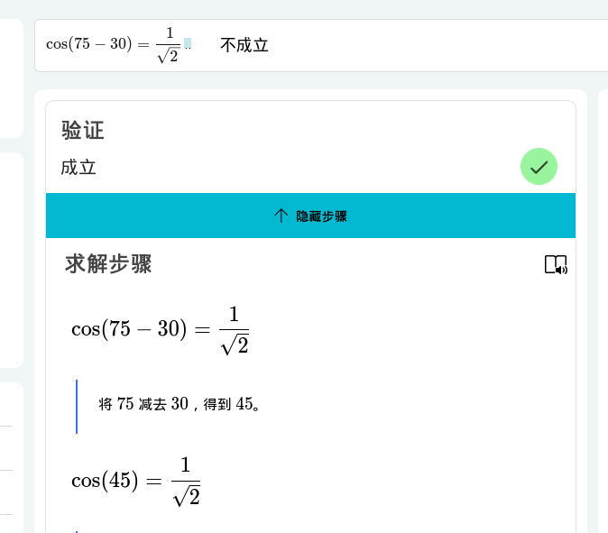</td> <td>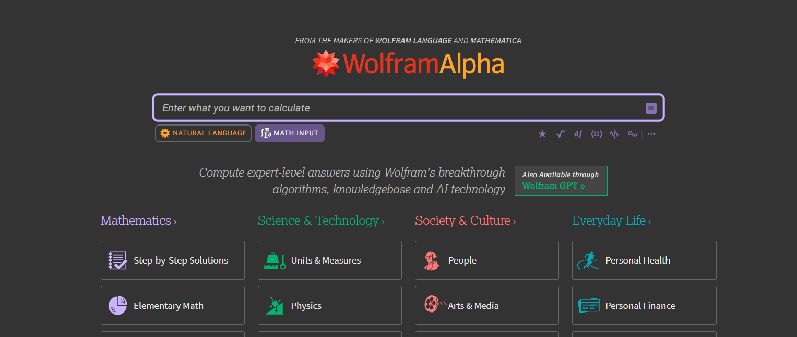</td> <td>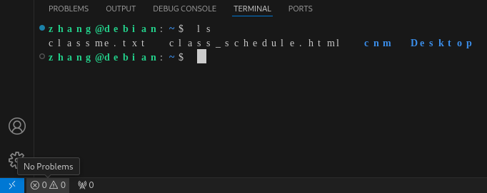</td> </tr> <td>SB mathsolver</td> <td>推荐 wolframalpha</td> <td>VS Code Linux 版的终端（使用宽字符，吓人）</td> </tr> <tr> <td>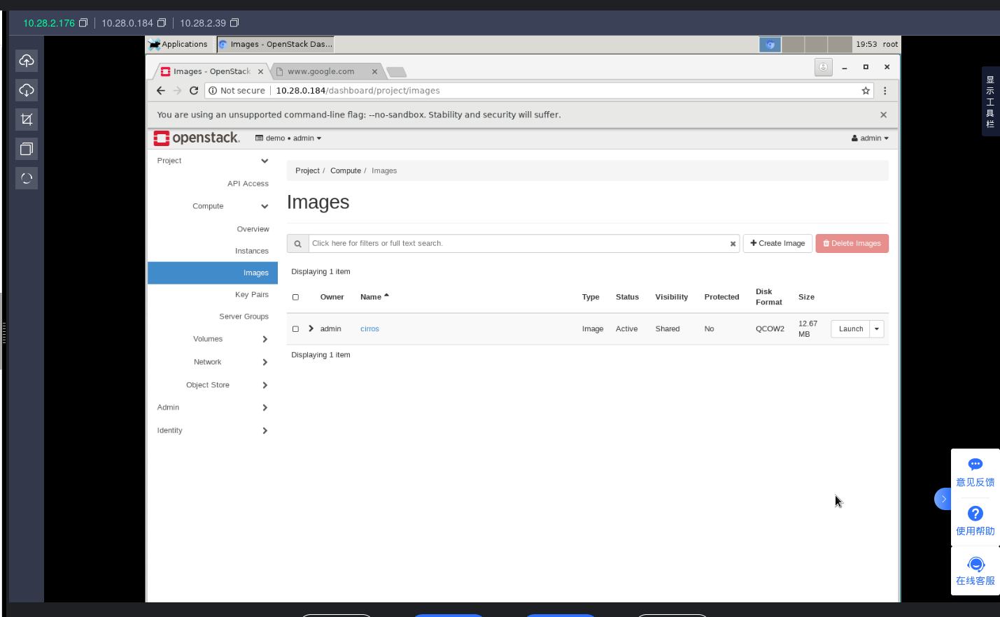</td> <td>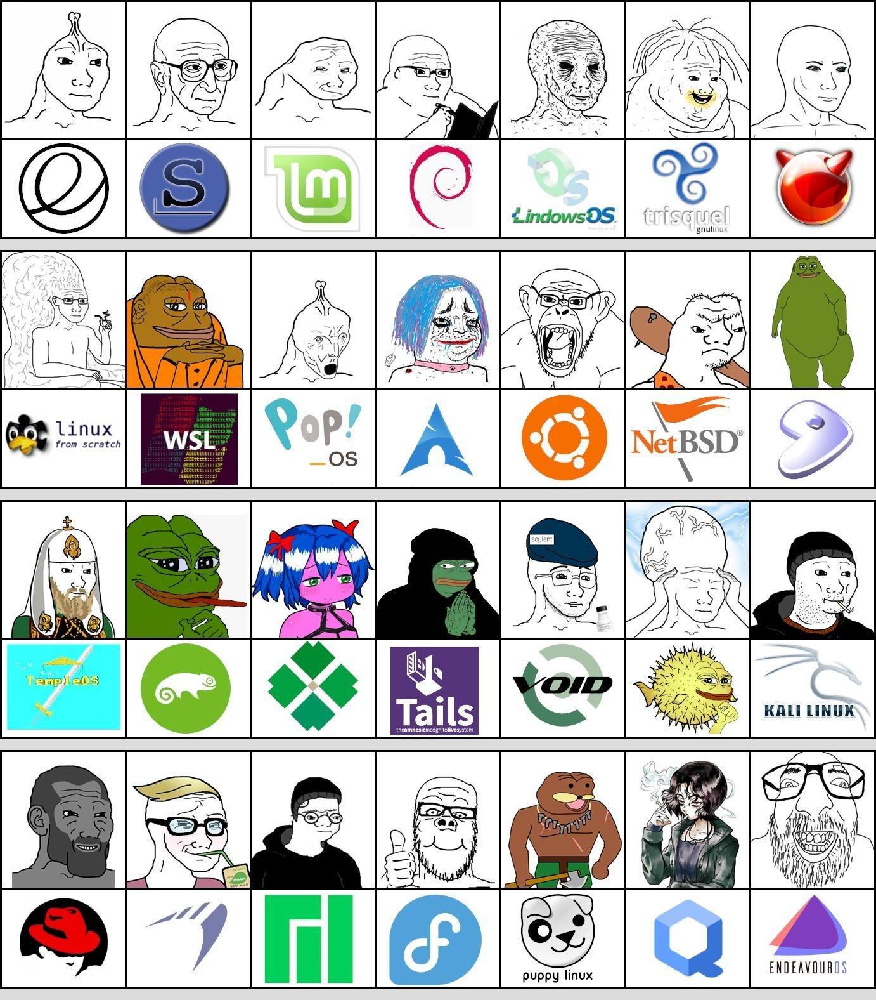</td> <td>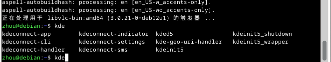</td> <tr> </tr> <tr> <td>一代一路线上培训网站</td> <td>Linux 发行版笑话（乐）</td> <td>我不喜欢KDE的原因之一</td> </tr> <td>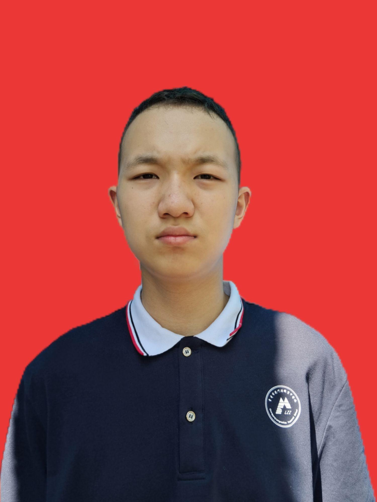</td> <td>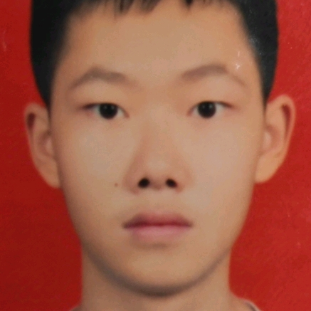</td> <td>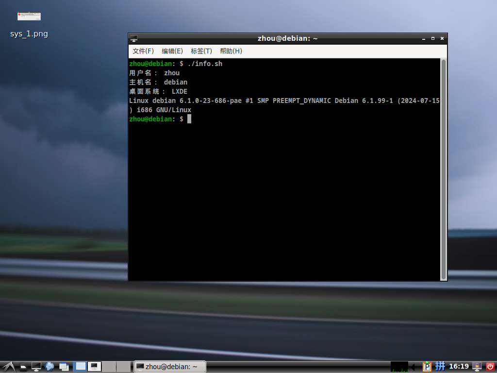</td> </tr> <tr> <td>周逸轩</td> <td>刘思瑞，张行班班长</td> <td>我家里的老电脑（debian）</td> </tr> <tr> <td><img src="../../imgs/IMG_20241203_154917.jpg"></td> <td>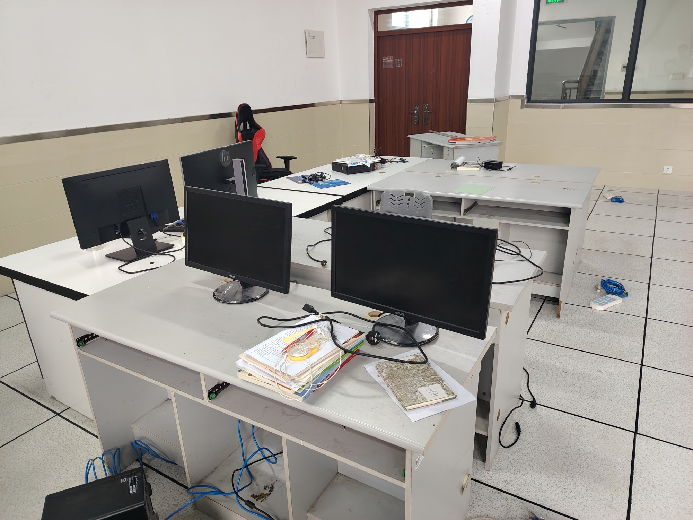</td> <td>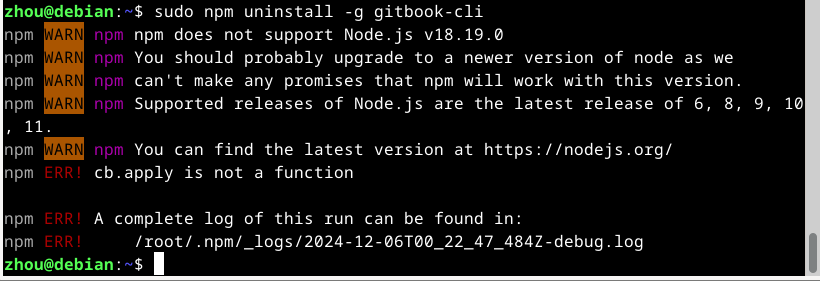</td> </tr> <tr> <td>在老实训室（7010）的最后一天</td> <td>新实训室（7001）</td> <td>npm 的问题很多（国内很多资源都是一样的状况）</td> </tr> </table>
←
第一部分 第三节
第二节
→